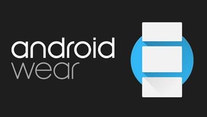

Instalar OTA en Android Wear
Autor: Carlos Enrique Rojas Mendoza
Introducción
Instala ya la OTA en tu Android Wear.
La nueva versión de Android Wear que trae a los relojes las pantallas de reloj interactivas,
el modo Together, el Traductor de Google y el soporte Wi-Fi al LG G Watch R ya está llegando
vía OTA a los relojes durante estos días.

Actualización manual
Si no quieres esperar para disfrutar de la última versión de Android Wear puedes actualizar
manualmente la OTA. De momento la OTA está disponible para descargar para los LG G Watch,
LG G Watch R, LG Watch Urbane y Sony SmartWatch 3.
Instalar manualmente su actualización OTA
- LG G Watch: LCA43 desde LDZ22D
- LG G Watch R: LCA44B desde LDZ22D
- LG Watch Urbane: LCA44B desde LDZ22D
- Samsung Gear Live: No disponible
- Sony SmartWatch 3: LCA43 desde LDZ22D
- Asus ZenWatch: No disponible
Para actualizar manualmente necesitamos tener instalado el SDK de Android y seguir los siguientes pasos:
- Descargar el archivo que nos corresponda de la actualización respecto a nuestro dispositivo y versión actual.
- Guardar el ZIP en la carpeta Platform-tools del Android SDK.
- Activar las opciones de desarrollo en Android Wear: Ajustes > Acerca de y pulsar siete veces sobre "número de compilación".
- Activar la Depuración ADB: Ajustes > Opciones de desarrollo > Depuración ADB > Sí.
- Conectar el reloj al ordenador por USB o por Bluetooth si se activa la opción Depurar por Bluetooth.
- Abrir una ventana de comandos en el ordenador y dentro de Platform-tools escribir:
adb reboot-bootloader. Aceptar la depuración en el reloj.
- Entrar al Recovery Mode tocando una de las teclas virtuales que aparecen en el reloj.
- Cuando aparezca un icono de Android con una exclamación, tocar la pantalla.
- Seleccionar apply update from adb deslizando el dedo hacia abajo.
- Desde el ordenador ejecutar:
adb sideload nombre_del_archivo.zip.
Ejemplo:
adb sideload 20ffa54cc8c2d942511dc6b0cbc55071c7f422cc.signed-lenok-LCA44B-from-LDZ22D.20ffa54c.zip
- Una vez instalada la actualización, reiniciar el dispositivo seleccionando la opción correspondiente. El proceso respetará tus datos.